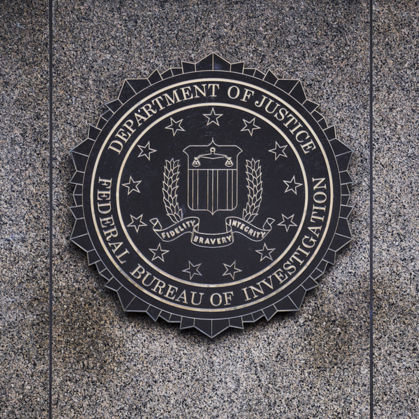

Убит Улоф Пальме!
В пятницу вечером 28 февраля 1986 года премьер-министр Швеции Улоф Пальме вместе с супругой Лисбет покинул свою квартиру в Старом городе и отправился на метро в кинотеатр «Гранд». В 23.20 после просмотра фильма они вышли из кинотеатра и, миновав пару кварталов, приблизились к перекрёстку улиц Свеавэген и Туннельгатан. Время было позднее, на улице, кроме троих мужчин, шедших впереди, и одного молодого человека, тенью скользившего по противоположной стороне, никого не было. На Свеавэген супруги заметили медленно двигающееся такси. В это время кто-то незаметно подкрался к ним сзади и два раза в упор выстрелил в спину Пальме. Лисбет Пальме бросилась к упавшему супругу, но успела заметить, как стрелявший резко отвернул в сторону и побежал по Туннельгатан в обратную сторону. Прохожий, шедший по другой стороне улицы, бросился за ним с криком «Стой», но убийца мгновенно растворился в тёмных «проходняках» старинного квартала. Водитель такси, наблюдавший сцену убийства со Свеавэген, вызвал по радио «скорую помощь», которая прибыла буквально через несколько минут, но Пальме скончался по пути в ближайшую больницу.
Виновато ЦРУ?
Убийство Пальме, возможно, было заключительным аккордом операции ЦРУ под кодовым названием «Дерево», а главным лесничим, вырастившим его, был не кто иной, как глава ЦРУ Уильям Колби, возглавлявший резидентуру ЦРУ в Стокгольме в 40-х годах. Здесь у него сохранилась хорошо налаженная агентурная сеть, которую усердно пополняли его коллеги в последующие годы.
Пальме не скрывал своей неприязни к империализму США, когда тот бесчинствовал во Вьетнаме. Весь мир обошла фотография с изображением антиамериканской демонстрации перед посольством США в Стокгольме, в первых рядах которой шёл премьер-министр Швеции. Чашу терпения натовских стратегов переполнила информация о том, что Пальме выступает за закрытие натовских станций электронного слежения на северном фланге — в Швеции (Мускё и Кариксфоне) и в Дании (в проливе Скагеррак). Пальме стали рассматривать как своего рода «агента влияния» КГБ (не исключено, что такой взгляд в НАТО стал преобладать не без участия предателя О. Гордлевского, который кроме шведа к агентуре КГБ причисляет финского президента У. Кекконена, израильского премьера Г Меир, канцлера ФРГ В. Брандта).
Арестован первый подозреваемый
По обвинению в убийстве Пальме был арестован Кристер Петтерссон — неуравновешенный человек без определённых занятий, страдающий алкоголизмом и замеченный в употреблении наркотиков. На его счету было 63 преступления, в том числе убийство, 18 раз он приговаривался к различным тюремным срокам.
Петтерссон действительно виноват?
Странно, что Петтерссону удалось (впервые в его преступной карьере) скрыться с места преступления. На одежде Петтерссона не было обнаружено следов пороха.
Против оснований подозревать Петтерссона говорили ещё и обстоятельство недальнего разлёта пуль (около 40 метров) и слабый звук выстрелов не свойственные этому типу оружия. Добиться такого эффекта, предварительно уменьшив пороховой заряд патронов, мог только профессиональный стрелок.